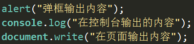
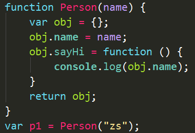

Js基础
介绍
JS的组成
ECMAScript 规定了js的语法标准以及规范
DOM document object model 文档对象类型
提供了一套操作DOM元素的API(应用程序接口)BOM Browser object model 浏览器对象模型 提供了一套操作浏览器相关内容的API
输出语句
\@常用输出语句

代码注释
\@代码注释
//单行注释
/* 多行注释 */
书写多行注释的时候注意不要发生嵌套
/** + 回车 用于函数的说明
书写位置
\@书写位置
可以写在HTML页面内的任意位置或者从外部引用（可以类比样式代码的书写位置）
标签属性
\@script标签的属性
type类型 src 地址
async异步加载，加载完成立即执行
defer异步加载，页面上的东西都执行完了才执行（了解即可!!!）
变量
变量的命名规范
\@变量的命名
规则(必须遵守)
区分大小写
不能是关键字和保留字
由字母、数字、下划线、\$ 组成且开头不能是数字
tips:关键字和保留字那么多，记不住怎么办？
首先，关键字就是你平时用的那些，而保留字在非严格模式下不能使用的只有：
class enum extends super const export import
而且，其实如果你使用了关键webstorm是有提示的，但是常见的几个最好还是记住
规范(建议遵守)
变量的名称要有实际意义
规则中所说的字母包括ASCII和Unicode字母字符，如汉字，但不推荐使用
变量的命名遵守驼峰命名法，首字母小写,第二个单词的首字母大写 例如：userName
变量的声明赋值
\@变量的声明和赋值
书写格式
var 变量名 = 值
练习
\@交换两个变量的值
\@不使用第三个变量
弱类型
\@弱类型
JavaScript是弱类型的语言，即声明不同数据类型的变量使用同一个关键字var
数据类型
数据类型
声明的时候不用考虑类型，但是处理和计算的时候要考虑类型
简单数据类型(值类型)
number数值型 string字符串型 boolean布尔型 undefined 未定义 null空
复杂数据类型(引用类型)
object对象 function 函数 Array 数组 Data 日期 RegExp 正则 Math String Number
Boolean
使用typeof关键字可以查看变量的数据类型
数值类型
\@数值类型
字面量
var num = 数字;
浮点数
计算浮点数时会丢失精度
我们通常用整数的计算来表示浮点数的计算
不要以两个浮点数是否相等作为条件判断的依据（判断范围还是可以的）
NaN
NaN是数值类型
NaN不等于自身
isNaN( ) 不是有意义的数值返回true
字符串类型
\@字符串型
字面量
var str = “字符串”;
字符串的长度
str.length
length就是长度的意思
转义符
\n 换行 \’单引号 \”双引号 \\斜杠
字符串的不可变性
由于字符串有不可变性，在大量拼接字符串的时候会非常消耗内存。
布尔类型
\@布尔类型
所有类型的值都可以转化成布尔值
会转化成false的值有： 空字符串 数值零NaN undefined null
undefined类型
\@undefined
表示声明但未赋值的变量
手动赋值为 undefined对象属性不存在的时候,这个属性的值为undefined
变量不可能自动为 null 除非手动赋值
当给别人提供一个返回对象的方法或者函数的时候
当函数中创建这个对象失败，或者获取对象失败，无法正常返回对象的时候，就应该返回null
类型转换
转换成字符串
\@转换成字符串
将任意类型转化为字符串
String(值)
大部分类型都有toString方法
值.toString()
小技巧
值+””
转化成数值型
\@转换成数值
将任意类型转化为数值型
Number(值)
将字符串转化为数值
parseInt(“字符串”) parseFloat(“字符串”)
小技巧
值-0
转化成布尔值
\@转换成布尔值
将任意类型转化为布尔值
Boolean(值)
条件判断中会自动转换
if(值)
小技巧
!!值
获取数据类型
typeof 关键字
语法 typeof 变量
返回值: 字符串的 类型 (返回的内容也是字符串)
使用typeof关键字去获取复杂数据类型的类型的时候 只能获取到object
typof是个关键字，后面加括号，只是对后面的代码进行分组，提升了优先级
操作符
\@运算符
一元运算符
\@递增和递减
递增++ 递减–
a++ 先参与运算 后自加
++a 先自加 后参与运算
逻辑运算符
\@逻辑运算符
&& 与
两个操作数都为true，结果为true
只要有一个操作数为false，结果为false
|| 或
只要有一个操作数为true，结果为true
两个操作数都为false，结果为false
! 非
逻辑非操作符首先会将它的操作数转换为一个布尔值，然后再对其求反
只有一个操作数
逻辑运算
&& 和 || 都采取短路运算，即第一个能够决定结果就不再看第二个了
&& 的要求比较宽松 要两个都是true才是true
所以看到第一个是false就没有必要继续完后看了
console.log(false && 不管了);
|| 的要求比较严格 要两个都是false才是false
所以看到第一个是true就没有必要继续完后看了
console.log(true || 不管了);
短路运算（了解）
&&和 ||
不但可以操作布尔类型的值，对其他类型的值也可以进行操作，并返回可以决定表达式结果的那个值。
赋值运算符
\@赋值运算符
a+=b 等价于 a=a+b
关系运法符
\< \<= >= >
== != 相等和不相等
=== !== 全等和不全等
注意: 当引用类型的数据和值类型的数据进行运算（+-*/ == > \<）的时候
会调用引用类型数据的valueOf方法，获取返回值，如果这个返回值可以参与运算，那么就直接用了
如果不能参与运算，再去调用该引用类型数据的toString方法,拿这个返回值来参与运算
例
//字面量
//{}
//[]
//1.只要遇到字面量，必然是在创建对象
console.log([] == []);//false
console.log({} == {});//false
//引用类型的数据和值类型
console.log([] == ![]);
//调用上述方法后就相当于console.log(“” == false);
运算符的优先级
优先级从高到底
() 优先级最高
一元运算符 ++ – !
算数运算符 先* / % 后 + -
关系运算符 > >= \< \<=
相等运算符 == != === !==
逻辑运算符 先&& 后||
值类型和引用类型
值类型：直接存储数据本身的数据，就是值类型的数据
引用类型：存储的是数据的地址，数据单独存储，这种数据就是引用类型的数据
特征:
值类型的数据在赋值的时候，会将存储的数据复制一份交给新的变量，两个变量值相等，但是存储的空间不一样，修改其中一个，另外一个不会受影响
引用类型的数据在赋值的时候，会将对象的地址复制一份交给新的变量，此时两个变量同时指向同一个对象，通过其中一个变量对对象进行修改，另外一个变量也会受到影响
var num = 100;
function test(n){
//n = num //值类型的赋值
n = 1000;
}
test(num);
console.log(num);//100
var obj1 = {
name:”高富帅”;
}
function test(obj){
//obj = obj1; //引用类型的赋值
obj.name = “矮穷丑”;
}
test(obj1);
console.log(obj1.name);//矮穷丑
var obj1 = {
name:”高富帅”
}
function test(obj){
obj.name = “矮穷丑”
obj = {
name : “白富美”
}
obj.name = “土肥圆”;
return obj.name;
}
console.log(test(obj1));//土肥圆
console.log(obj1.name);//矮穷丑
语句
选择语句if
if (condition) {
statement1
} else if (condition) {
statement2
} else {
statement3
}
三元表达式
表达式1 ? 表达式2 : 表达式3
选择语句switch
switch (expression) {
case value:
statement
break;
case value:
statement
break;
default:
statement
}
循环语句for
for (initialization; expression; post-loop-expression)｛
statement
｝
initialization表示：初始化表达式
expression表示：控制表达式
post-loop-expression表示：循环后表达式
三者都是可选的
循环语句 for-in & 关键字in的使用
- for-in 遍历对象的键
语法 for (var k in obj)｛
console.log(k);
｝
注意：对象的属性全都是字符串类型的
注意： 在for-in中使用键访问对象的值的时候，不能使用点语法
只能使用中括号 又叫做 关联数组语法
判断对象是否可以访问某个属性
- 语法： 属性名 in 对象
console.log(“toString” in obj);
- 返回值： 布尔值，表示能或者不能
break和continue
break跳出当前循环，执行循环后的语句
continue跳出当前循环，继续执行循环
循环语句while
while语句 先判断后执行
while(expression) statement
do while 语句 先执行后判断
do {statement} while (expression);
数组
数组的声明
通过构造函数声明（更加通用）
var arr = new Array(“a”, “b”, “c”);
通过字面量声明（更加简便）
var arr = [“a”,”b”,”c”];
数组的赋值和取值
赋值
数组名[索引号] = 值 //arr[0]=100
取值（通过数组名和索引即可取到对应的值）
数组名[索引号] //console.log(arr[0])
数组的遍历
数组的索引是从0开始的
数组的长度可以通过arr.length获取
由于数组的索引从0开始，所以最后一个值的索引为arr.length-1
通过for循环遍历数组
for (var i = 0; i \<= arr.length - 1; i++) {
console.log(arr[i]);
}
可简写为：
for (var i = 0; i \< arr.length; i++) {
console.log(arr[i]);
}
\@数组length的应用
往数组中添加新元素，数组的length会增加
通过给arr.length赋值可以改变数组的长度
冒泡排序
\@冒泡排序
var arr = [65, 97, 76, 13, 27, 49, 58];
//循环控制趟数
for (var i = 0; i \< arr.length - 1; i++) {
//控制两两比较的次数
for (var j = 0; j \< arr.length - 1; j++) {
//两两比较 从小到大排序
if (arr[j] > arr[j + 1]) {
//交换位置
var tmp = arr[j];
arr[j] = arr[j + 1];
arr[j + 1] = tmp;
}
}
}
函数
函数的声明和调用
函数的声明
function 函数名 () {
//函数体
}
函数的调用
函数名();
函数的参数
有参数的函数的声明（声明中的参数只是一个占位符，没有实际的值，是形式参数，即形参）
function 函数名 (参数1,参数2,参数3…) {
//函数体
}
有参数的函数的调用（调用时传入的参数才是有真正数值的参数，是实际参数，即实参）
函数名(参数1,参数2,参数3…);
函数的返回值
在函数中通过return关键字将要返回值返回
return 要返回的值;
函数高级概念
\@参数详解
在JS中实参的个数和形参的个数可以不一致
\@返回值详解
函数的返回值是什么，调用这个函数就相当于调用什么，如果没有返回值则为undefined
函数在执行完成return语句后便会退出函数，后面的代码不会执行
\@三种定义方式
函数声明
function fn1() {
//函数体
}
函数表达式
var fn2 = function () {
//函数体
};
Function
Var 函数名= new Function fn1()
\@匿名函数
匿名函数（没有名字的函数）
变量 = function () {
//函数体
}
\@递归调用
程序调用自身的编程技巧称为递归
\@回调函数
函数也是一种普通的数据类型
因此函数也可以被当作参数传递
被当作参数传递的函数叫做回调函数
对象
从宏观的角度讲，对象是对客观事物的抽象，事物的特征可以用属性表示，事物的行为可以用方法表示
从微观的角度讲，对象就是一种数据类型，通过对象可以方便地对变量和函数进行管理
初期我们甚至可以把他简单地理解为一个工具箱
键值对
键值对就是一种对应关系，通过键能够方便地找到值
键:值 key:value k:v
对象的声明
通过构造函数声明（更加通用）
var obj= new Object();
通过字面量声明（更加简便）
var obj= {};
对象具有属性和方法
属性 用来描述对象的特征 一般是名词 对应变量
方法 用来描述对象的行为 一般是动词 对应函数
属性
属性的定义
对象.属性名 = 值
属性的调用
对象.属性名
方法
方法的定义
对象.方法名 = function(){ //函数体 };
方法的调用
对象.方法名()
关于this 的指向
全局上下文:
全局运行上下文中（在任何函数体外部），this 指代全局对象
函数上下文:
对象方法中的this指的是该方法所属的对象 直接调用中的this指的是全局对象
总之，函数上下文中（在函数内部），this指的是当前函数所属的对象
构造函数中:
当一个函数被作为构造函数使用时（前面加new关键字），new关键字会让this的指向改变，并让其成为当前函数的返回值
批量创建对象
工厂模式创建对象
为什么要优化创建对象的方式
因为对象在项目中被大规模的使用，所以每一点小小的改进都会对项目整体效率带来很大的提升，现阶段同学们还不可能有深刻的体会，只是让大家了解一下，后面讲项目大家自然就明白了。
\@工厂模式创建对象
同类型对象，只是一些属性的值不同，通过对象字面量创建对象每次都要写那么多东西很费劲，我们可以将创建对象的过程封装进一个函数，只把发生变化的属性作为参数传入，从而简化对象创建的过程。
但是工厂模式只是创建出来一个普通的对象并将其返回，因此无法判断实例的具体类型。
构造函数创建对象
\@this和new
利用new 关键字可以声明新的对象。new
关键字可以让构造函数中this的指向改变，并让构造函数把this返回。
\@构造函数
构造函数也是函数，只不过会默认返回一个对象。


\@构造函数创建对象
通过构造函数创建对象更方便（不需要创建对象并返回）。更重要的是可以通过instanceof来判断实例的类型了。
对象的动态创建
对象的动态特性
就是指，在对象创建出来之后，可以随时为对象添加成员的这种特性，就是动态特性
语法: 成员：属性和方法
利用对象动态特性给对象添加成员的方式
- 点语法
对象名.属性名 = 值
- 关联数组语法
对象名[“属性名”] = 值
- 案例
obj[[]] = “我是一个怪物！！”;
//相当于做了如下操作
//obj[“[object Object]”] = “我是一个怪物！！”;
delete关键字
语法：delete 变量名/对象.属性名
返回值：boolean类型 表示是否删除成功 不可信！！！
删除未使用var声明的变量 (使用var的删不掉)
a = 10;
console.log(delete a);
console.log(a);
删除对象的属性
var obj = {
// name : “郑天杨”
// }
console.log(delete obj.name);
//Object.defineProperty() 表示是否可以删除对象的属性 后面js高级会学
delete删除数组元素
delete删除数组元素的时候，数组原本的其他数据的索引不会变化而且数组的长度也不会变化！！只是删除了索引及其对应的值
其他概念
对象字面量
\@对象字面量
var o = {
name : “zs”,
age : 18,
sayHi : function() {
console.log(this.name);
}
};
对象标记法
\@对象标记法
JavaScript Object
Notation（JavaScript对象标记法）是仿照JS中对象字面量的格式去书写的一串用来记录对象数据的字符串，可以用于数据传输。将来学习AJAX会详细学习。
访问属性的两种方式
\@访问属性的两种方式
点语法（简单）
对象.属性名
中括号（灵活）
对象[“属性名”]
遍历的两种方式
\@遍历的两种方式
通过for可以对集合进行有序的遍历
通过forin可以对集合进行有序的遍历
for(var k in obj) { 语句 }
k变量代表的是json中的各个属性（key）和 var i = 0中的i是一个意思 名字不同而已